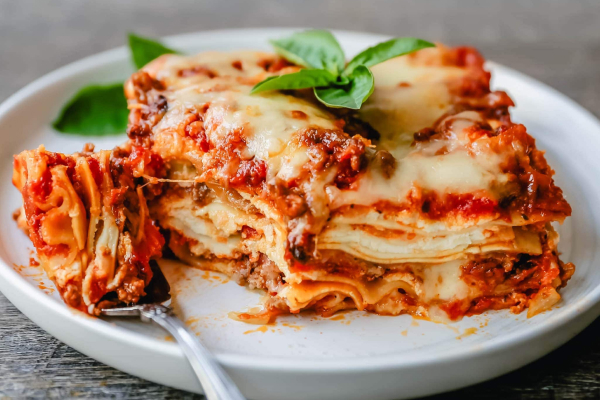

Lasagna

Description
Lasagna is a classic Italian dish known for its comforting layers of pasta, rich meat sauce, creamy béchamel, and melted cheese. This hearty meal combines layers of tender lasagna noodles with a flavorful meat sauce made from ground beef, tomatoes, and aromatic herbs. Each layer is spread with a smooth béchamel sauce, which adds a creamy texture and helps bind the dish together. The top is generously sprinkled with mozzarella and Parmesan cheese, creating a golden, bubbling crust when baked. Lasagna is a beloved dish perfect for family dinners or special occasions, offering a satisfying and indulgent experience with each bite.
Ingredients
(For 6 servings)
Meat Sauce:
- 500g (1 lb) ground beef or a mix of beef and pork
- 1 tablespoon olive oil
- 1 onion, chopped
- 2 garlic cloves, minced
- 1 carrot, chopped
- 1 celery stalk, chopped
- 800g (28 oz) can of crushed tomatoes
- 2 tablespoons tomato paste
- 1 teaspoon each of dried oregano and basil
- Salt and pepper to taste
- 1/4 cup red wine (optional)
Béchamel Sauce:
- 4 tablespoons butter
- 4 tablespoons all-purpose flour
- 3 cups whole milk
- 1/4 teaspoon ground nutmeg
- Salt and pepper to taste
Lasagna Layers:
- 12 lasagna noodles, cooked
- 2 cups mozzarella cheese, shredded
- 1 cup Parmesan cheese, grated
Steps
- Cook Meat Sauce:
- Sauté onion, garlic, carrot, and celery in olive oil.
- Add ground beef and cook until browned.
- Stir in tomatoes, tomato paste, wine, oregano, basil, salt, and pepper.
- Simmer for 20 minutes.
- Make Béchamel Sauce:
- Melt butter in a saucepan, whisk in flour to form a roux.
- Gradually add milk, whisking until thickened.
- Season with nutmeg, salt, and pepper.
- Assemble Lasagna:
- Preheat oven to 375°F (190°C).
- Spread a thin layer of meat sauce in a baking dish.
- Layer noodles, meat sauce, béchamel, mozzarella, and Parmesan.
- Repeat layers, ending with béchamel and cheese on top.
- Bake:
- Cover with foil and bake for 25 minutes.
- Remove foil and bake for an additional 15 minutes until golden.
- Rest and Serve:
- Let lasagna rest for 10 minutes before slicing.
- Serve hot.